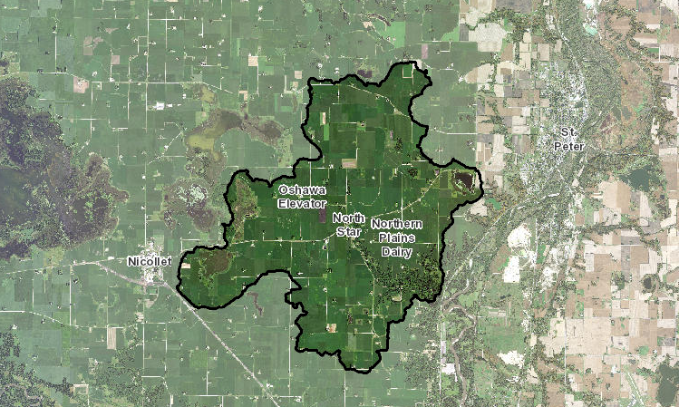
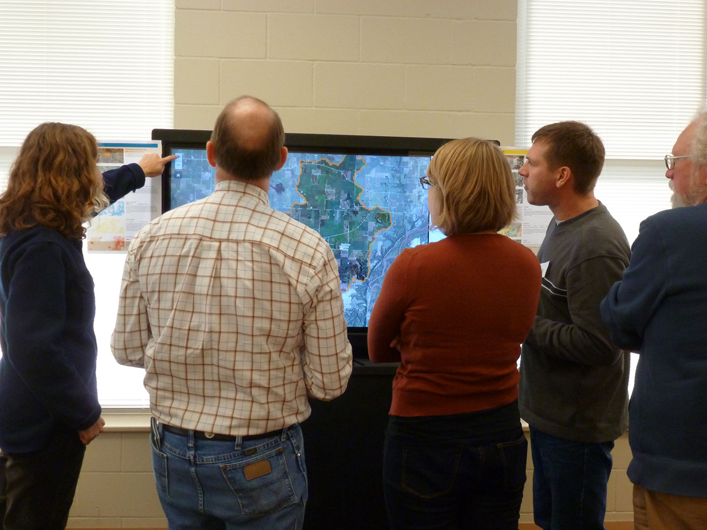

“…[provides] state-of-the-art technology for exploring new opportunities to enhance economy, environment, and community vitality in agricultural regions of Minnesota.”
AOI: Seven Mile Creek
24,000 acres of fun!

Definitions
Geodesign
“Geodesign is a design and planning method which tightly couples the creation of design proposals with impact simulations informed by geographic contexts.”
Collaborative geodesign
“…[a] framework for design projects which required iteration, feedback, and collaboration”
Three core areas
People
Environment
Tool(s)
1. People
Put people first
Stakeholder engagement
Build community
Build trust
Work together
People need tasks and goals
There's a reason you need a collaborative geodesign tool, and a reason your stakeholders should be using it. Don't put something in front of them without a clear task or goals, grounded in the real world.
Why belabor this?
Every project is different.
Every team is different.
Do what you need to do.
2. Environment
Plan Ahead
Cramped quarters? Wide open spaces? As with any event, get familiar with the space(s) you'll have to work in ahead of time, if possible.
Comfort zones
People may not know each other,
they may not even like each other,
but they need to be able to collaborate.
What medium? Or, media?
Pencil & paper
Whiteboard
Tablet
Large touchscreen
Our choice
55" touchscreens
Rolling cases
Windows 8.1 (not by choice?)
Chrome

3. Tools
The right tool(s)…
…support the people (and their task)
…work in the environment
…allow for iteration, feedback, and collaboration
Support the people
Usable tools
Accessible tools
Tools that support “mistakes”
Anticipate (or observe) needs
Tools that provide valuable reference data (layers)